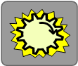
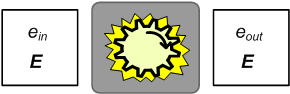
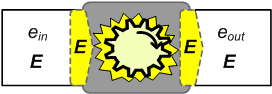

i051101
TROST
InfoNote
The
Working of Computation
The Very Idea
|
|
i051101
TROST
InfoNote |
0.02 2017-07-01 -07:36 -0700 |
- Latest version: The latest version of this InfoNote is available on the Internet at
<http://TROSTing.org/info/2005/11/i051101b.htm>.- This version: The Working of Computation: The Very Idea 0.02 <http://TROSTing.org/2005/11/i051101d.htm>. Consult that page for the latest status and for the most-recent electronic copies of the material.
{Author Note: Need a synopsis and a little table of contents. This is being set up to support one or two web posts that will use the images that I am preparing.}
To move beyond "What Computers Know," we'll now provide some diagrams for visualizing how the computer is made an instrument in our world. Recall the table of six limitations in our ability to have the computer do what we want. We now want to consider how we manage to bridge that gap (without expecting to cross that bridge).
1.1.1 In diagrams we'll symbolize the processing of an operating machine (computer) with the turning-gear symbol (Fig. 1-1). The gear and the arrow signify the machine "cranking out" computations. The "blaze" is used to emphasize that we are depicting the machine operating, not the machine in some inactive state.
Fig. 1-1 Machine
Processing Symbol
1.1.2 The symbol is meant to emphasize that computation happens as a process and the computational result arises out of the performance.
1.1.3 We won't be looking inside the machine or inspecting its operation as it proceeds. The shaded rectangle reflect the machine being mostly opaque to us (just as we are to it, in the sense that the machine can't "know" of us).
1.1.4 Abstraction Alert. We are also going to view the machine abstractly, not as a tangible artifact. It is the processing that concerns us, not the device, and the processing is on abstract terms. This is not something to worry about. The working of the computer has significant connections with the manifestation of abstractions. We need to appreciate the connection with abstraction to understand the power (and limitations) of computation.
"A computational process ... cannot be seen or touched.
It is not composed of matter at all. However, it is very real."
-- Abelson and Sussman, Structure and Interpretation of Computer Programs, p.1
Fig. 1-2 Depicting Input-Output 
1.2.1 The inputs and outputs of the computer process are depicted with rectangular shapes. By convention, the inputs are depicted on the left and the outputs are depicted on the right (Fig. 1-2).
1.2.2 The capital symbol (E) at the bottom of an input-output block signifies the encoding. There will be some particular encoding (or language) by which the inputs are conveyed to the machine and the by which the outputs are presented by the machine.
1.2.3 For computing, the encoding employs some variety of digital medium and, at the lowest level, it is usually something that we see as carrying an organization of bits: binary-encoded data. Whatever specific coding is identified in this position, it is expected to be something that the operating machine can acquire (as input) and present (as output).
1.2.4 The labels, ein and eout, above the encoding, identify the particular content that is carried via the input (ein) or output (eout) encoding.
1.2.5 Abstraction Alert. Although we might think of the inputs and the outputs as tangible artifacts—forms that are perceivable to us—we will usually speak about computation quite abstractly. When we talk about the computer in terms of manipulating bits and producing bits, we have already abstracted away the physical, electronic nature of the computer processor. In a very strict sense, there are no bits there. However, the working of the computer is such that it is as if there are and we'll allow ourselves to speak as if there really are bits being sensed, processed, and presented because what is actually happening is completely consistent with that interpretation.
1.2.6 Successful Manifestation of Abstractions. The degree to which abstractions like bits (and others built atop them) are successful is testimony to how reliably the manufacturers of computer chips and and physical digital computers have manifest abstractions in the operation of the computer. The reality is a successful model for the abstract binary computer. We will not escape this reliance on abstract concepts, but we'll emphasize it only where it seems important to appreciate.
1.2.7 In any case, we will be assuming the intangible, abstracted input and output encoding. These may arise through the pressing of keys. They may appear encoded as marks on a visible display surface. But when we depict inputs and outputs, we have in mind abstracted media that mate with the abstracted level of processing manifest by the machine.
1.2.8 Successful Manifestation of Encodings. We also need to allow for the input or output being carried in an artifact, whether on a tangible medium or in a digital recording on a physical carrier such as a CD-ROM or a file on a magnetic disc. The encoding and its content is successfully manifested when the computer properly recognizes the input encoding in its medium and represents the output encoding in its medium. Usually, we will simply presume that recording is accomplished and place our attention on the encoding abstraction.
Fig. 1-3 Depicting Processing 
1.3.1 To tie mechanical interpretation of the inputs and outputs to the process of the (abstracted) machine, the inputs and outputs can be joined to the machine in the diagram (Fig. 1-3). (I think of this as adhesive-bandage execution architecture.)
1.3.2 The added input and output "slots" are oriented to show the direction from input through process to output. As a check that we are operating at the expected encoding level, the encoding is symbolized on the input-output slots.
1.3.3 Abstraction Alert. This diagrammatic approach is highly schematized. It can be used to signify families of computations, varieties of media, varieties of encodings, and we can also use it to narrow in as a depiction of specific encodings and specific computations with them. The level of specificity will usually be clear from the context, the substitutions for variables (such as E and ein), and accompanying explanation. In that respect, this diagrammatic usage is flexibly informal. One important "leveling" case will be the maintenance of consistent levels of abstraction for the (abstract) encoding and the (abstract) process. (That is, if we are ingesting binary data, the process is enacts a procedure on binary data, not something else.)
{Author Note: Distill these down to only what is needed for here, without the anecdotal stuff, which belongs elsewhere. Some of this goes with what programmers know and is not needed here.}
- Abelson, Harold., Sussman, Gerald Jay., Sussman, Julie (1996).
- Structure and Interpretation of Computer Programs, second edition. MIT Press (Cambridge, MA: 1996). ISBN 0-262-01153-0.
- Bratman, Harvey (1961).
- An Alternate Form of the "UNCOL Diagram." Comm. ACM 4, 3 (March 1961), 142. Available at <http://doi.acm.org/10.1145/366199.366249>. A more-extensive formalization was later developed in (Early & Sturgis 1970).
The search for a Universal Computer Oriented Language (UNCOL) began in 1958 as a way to reduce the complexity of migrating programming languages onto different machines (Strong, et.al.). Thus began the long and circuitous march of programming-system technology toward formulation of .NET, the Common Language Infrastructure, and its Common Intermediate Language (CIL). I omit Java from the apostolic succession here for the simple reason that the UNCOL effort rejected the idea of one programming language for all machines as a viable solution.
Harvey Bratman provided a brilliant diagramming technique for characterizing the creation of programs using computers followed by subsequent execution of those programs to create further programs, and so on. This was of immeasurable value in being able to grasp and visualize all of the moving parts and the conditions that have to be preserved in bootstrapping implementations of programming languages atop others and across platforms. The diagrams provide serious purchase on what, in using UML (OMG 2005, Chapter 10), are hinted at by "execution architecture" and "deployment." That is part of my motivation for reincarnating the Bratman diagram here.
Although I have gleefully used Bratman diagrams over the years, something has nagged at me almost from the moment that the article appeared. I'm bothered by the failure to distinguish between: (1) the function that is achieved versus the procedure that is followed, (2) procedures and the expressions of them, and (3) expressions of procedures versus the mechanical behavior that realizes conduct of the procedures. Although those confusions might be thought harmless, I am concerned that we have missed something essential by not teasing apart the distinct concepts. The current appraisal of "What Computers Know" and leading up to "What Programmers (Should) Know" is my effort to lay my concern to rest. Careful creation of a consistent architectural formalism that manages the separation will be undertaken in completing TROST InfoNote i051001: Execution Architecture.
- DeMarco, Tom (1979).
- Structured Analysis and System Specification. Yourdon Press Prentice-Hall (Englewood Cliffs, NJ: 1978, 1979). ISBN 0-13-854380-1.
Although we speak of data flow (and document flow in the historical workflow usage), these diagrams, described in Chapter 4, are esssentially about representing a system as a network of component processes, and the connecting lines identify interfaces on which the mutual components depend.
- Early, Jay., Sturgis, Howard (1970).
- A formalism for Translator Interactions. Comm. ACM 13, 10 (October 1970), 607-617. Available at <http://doi.acm.org/10.1145/355598.362740>.
- Hamilton, Dennis E. (2005)
- What Computers Know. {cite the companion folio and also the blog post.}
- Hamilton, Dennis E. (2008).
- Reality is the Model. (web log article) Orcmid's Lair (May 29, 2008). Available at <http://orcmid.com/blog/2008/05/reality-is-model.asp>.
- Hopper, Grace Murray (1952).
- The Education of a Computer. Proc. Association for Computing Machinery national meeting, May 2-3, 1952.
In addition to describing a model of computation and man-machine interaction as part of the programming and problem-solving process, this paper discusses compiling of programs as a process of stitching together subroutines from a large library, with some ideas of optimization and of routines of a type being generated by other routines. Early concern about the overhead of calling subroutines are reflected in the paper. The conceptualization is not sharp, reflecting the early state of thinking on software as an output of computation.- Object Management Group (2005).
- Unified Modeling Language: Superstructure, version 2.0. Object Management Group specification, document formal/05-07-04, Object Management Group, Bedford, MA (August 2005). Available in PDF format at <http://www.omg.org/technology/documents/formal/uml.htm> accessed 2005-11-13.
- Strong, J., Wegstein, Joseph., Tritter, A., Olsztyn, J., Mock, Owen., Steel, Thomas B.,Jr. (1958)
- The Problem of Programming Communication with Changing Machines: A Proposed Solution. Report of the Share Ad-Hoc Committee on Universal Languages, Part 1. Comm. ACM 1, 8 (August 1958), 12-18. Available at <http://doi.acm.org/10.1145/368892.368915>.
The last time I saw Tom Steel (at an OODB meeting in Anaheim), I taunted him a little by saying I remembered UNCOL. He conceded the sins of his youth and we both laughed. I'm not so sure which of us was the most surprised, later on, to see the difficulties of UNCOL largely overcome at last by Moore's Law, the Java Virtual Machine, the Common Language Infrastructure, and other innovations. I had thought that it would take something like Peter Landin's applicative-language functional-programming approach. The 80-20 rule apparently demands less than that, although there's a resurgence of interest in functional programming and dynamic languages as their features come to be appreciated as additions to the ever-popular programming-language approaches.

|
created 2008-06-05-19:43 -0700 (pdt) by
orcmid |